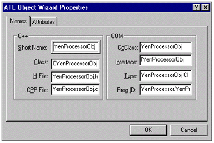
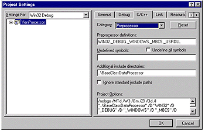
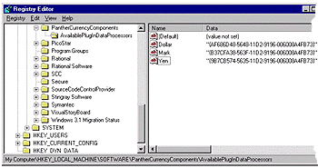

| ||||
Steve Robinson
Panther Software
In step 2, we are going to create plug-in data processors. The purpose of a data processor is to massage or convert data. The purpose of a data processor plug-in is to dynamically change the data massaging or conversion technique. For example, our client application will provide a list of currencies and request dollar equivalents. Unfortunately, our server only knows how to return values in dollars. (Let's assume that we do not have the source code for the DCOM server.) By introducing the concept of a plug-in in our client application, we can convert the returned value into a different currency valuation on the fly (a must for those Wall Street arbitrage desks). With a plug-in model, we can dynamically add new currency converters without recompiling any code, allowing us to convert in any direction between Dollars, Yen, and Marks today -- and then to add Lira and Pesos to our system tomorrow, without touching the client. Now that you understand a plug-in model, let's write some plug-ins, so we can take on the Wall Street currency traders in the high-stakes game of currency arbitrage trading.
The first requirement is to create an interface for our data processor. This interface will serve as the immutable signature for all data processors in this example. We will also create a C++ class that will implement the interface method so that our derived data processors can optionally implement the interface method. No, we are not violating the COM rule that says one must provide an implementation of every method of the interface, but rather leveraging C++ to provide the implementation in a base class if a derived class chooses not to implement a method. Since COM methods are virtual, method implementation location (base or derived) will be determined at run time. This is a great advantage of developing COM in C++. Imagine if you had an interface that contained 100 methods, and you only desired to override one method. Well, with C++ and COM you can do exactly that!
The base interface and C++ class are included with the sample code in the BaseClassDataProcessor folder, and are shown below (first, the IDL file):
// This file will be processed by the MIDL tool to contain the
// definition of the IBaseClassDataProcessorObj Interface.
import "oaidl.idl";
import "ocidl.idl";
[
object,
uuid(FFD77865-53CF-11D2-9195-006008A4FB73),
helpstring("IBaseClassDataProcessorObj Interface"),
pointer_default(unique)
]
interface IBaseClassDataProcessorObj : IUnknown
{
[helpstring("method ProcessData")]
HRESULT ProcessData([in] long lValue, [out,retval] float*
pfloatResult);
};
And the header file:
#ifndef __BASECLASSDATAPROCESSOROBJ_H_
#define __BASECLASSDATAPROCESSOROBJ_H_
class CBaseClassDataProcessorObj : public IBaseClassDataProcessorObj
{
protected:
virtual bool VerifyData(long lValue)
{
if(lValue < 0)
{
_ASSERTE(false);
return false;
}
return true;
}
STDMETHOD(ProcessData)(long lValue, float* pfloatResult)
{
bool bValid = VerifyData(lValue);
if(!bValid)
{
return E_INVALIDARG;
}
*plResult = lValue;
return S_OK;
}
};
The CBaseClassDataProcessorObj implements IBaseClassDataProcessorObj::ProcessData. The class also provides a check to ensure the value supplied to it is not less than 0 through the method verify data. (It is impossible for a currency to have an exchange rate less than 0.)
In addition to supplying an interface definition and a default class implementation, we need to supply the definitions of the interfaces, which is done by processing the IDL file through the MIDL compiler. The MIDL compiler will generate a new file called BaseClassDataProcessor.h. This file, which will be included in the client application, provides the function prototype for the IBaseClassDataProcessor::ProcessData.
The easiest way to process a stand-alone IDL through the MIDL compiler is within a command window (DOS). Simply issue the command below:
midl BaseClassDataProcessor.idl
(You may need to run vcvars32 bat, which is located in your VC98\bin folder, from the command window in order to set the environment variables so the MIDL compiler can be found.)
Once the MIDL step is complete, you are ready to create some derived data processors. The first data processor we will create will be the YenProcessor. Using AppWizard, create a new ATL COM AppWizard project as before -- but this time, select Server Type Dynamic Link Library (DLL).
Next, we need to insert a new ATL Object with the wizard. Add an object name, YenProcessorObj, and select the default attributes. Since the COM object will be created inside an MFC application, single-threaded apartment (the default on the Attributes tab) is perfect.

Figure 9. Inserting a new ATL Object
Since we are going to use the IBaseClassDataProcessorObj interface method, there is actually no need to create a new interface for this COM object. Accordingly, open up the wizard-generated IDL file, import the IBaseClassDataProcessorObj interface, remove the wizard-generated interface, and change the default interface in the coclass section to IBaseClassDataProcessorObj. The YenProcessorObj IDL code now declares only the IBaseClassDataProcessorObj interface. The type library is generated by the MIDL compiler now supports only IBaseClassDataProcesssorObj. (You can look at the type library with OLEView, which comes with Visual C++ 6.0). The complete YenProcessor.idl code is listed below:
// YenProcessor.idl : IDL source for YenProcessor.dll
// This file will be processed by the MIDL tool to
// produce the type library (YenProcessor.tlb) and marshalling code.
import "..\BaseClassDataProcessor\BaseClassDataProcessor.idl";
[
uuid(9B7CB567-5635-11D2-9196-006008A4FB73),
version(1.0),
helpstring("YenProcessor 1.0 Type Library")
]
library YENPROCESSORLib
{
importlib("stdole32.tlb");
importlib("stdole2.tlb");
[
//this is the components CLSID
uuid(9B7CB574-5635-11D2-9196-006008A4FB73),
helpstring("YenProcessorObj Class")
]
coclass YenProcessorObj
{
[default] interface IBaseClassDataProcessorObj;
};
};
We now need to modify our YenProcessorObj so that it supports the IBaseClassProcessorObj interface. This requires four steps in YenProcessorObj.h:
Step 1: Replace the default inheritance of
public IDispatchImpl…
with
public CBaseClassDataProcessorObj
This allows us to inherit the default implementation of class CBaseClassDataProcessorObj.
Step 2: Replace the default COM Map interface entries of
COM_INTERFACE_ENTRY(IYenProcessorObj) COM_INTERFACE_ENTRY(IDispatch)
with
COM_INTERFACE_ENTRY(IBaseClassDataProcessorObj)
This changes our COM object from supporting the wizard-supplied IYenProcessorObj and IDispatch to support only IBaseClassDataProcessorObj.
Step 3: Provide an implementation for IBaseClassDataProcessor::ProcessData (shown below along with a complete listing of YenProcessorObj.h).
#define __YENPROCESSOROBJ_H_
#include "resource.h" // main symbols
#include <BaseClassDataProcessorObj.h>
// CYenProcessorObj
class ATL_NO_VTABLE CYenProcessorObj :
public CComObjectRootEx<CComSingleThreadModel>,
public CComCoClass<CYenProcessorObj, &CLSID_YenProcessorObj>,
public CBaseClassDataProcessorObj
{
public:
CYenProcessorObj() {}
DECLARE_REGISTRY_RESOURCEID(IDR_YENPROCESSOROBJ)
DECLARE_PROTECT_FINAL_CONSTRUCT()
BEGIN_COM_MAP(CYenProcessorObj)
COM_INTERFACE_ENTRY(IBaseClassDataProcessorObj)
END_COM_MAP()
// IYenProcessorObj
public:
STDMETHOD (ProcessData) (long lValue, float* pfloatResult)
{
bool bValid = VerifyData(lValue);
if ( !bValid )
{
return E_INVALIDARG;
}
*pfloatResult = ((float)lValue) * (float).1111;
return S_OK;
}
};
#endif //__YENPROCESSOROBJ_H_
Step 4: Add #include <BaseClassDataProcessorObj.h> to the class declaration, and add ..\BaseClassDataProcessor to the Additional include directories, as shown below:

Figure 10. The project settings
The final item for the YenProcessor is to consider how it should be made available to our client application. As you know, in order to use a COM object in a client, the client must be aware of the CLSID, IID, and interface method prototypes. Since all our data processors will support interface IBaseClassDataProcessorObj, the client can have IID_IBaseClassDataProcessorObj hard-coded as a constant and include the method prototypes in BaseClassDataProcessor.h (generated by the MIDL compiler when it processed BaseClassDataProcessor.idl). However, since we want the client application to dynamically discover new data processors, hard-coding CLSIDs would be inappropriate.
The solution is to create a "Component Category" in the registry for our data processors. Our client application (or any client application) can, at run time, find all available data processors and allow the user to select which component to utilize. Accordingly, we need to create a component category that lists the CLSIDs of data processors. It will also be helpful if we associate an easy-to-understand name with the CLSID, so that a user can easily identify the component.
Fortunately, there is an easy way to do this through a script that is linked into the binary, rather than writing a separate registry file. Simply add the following lines to the YenProcessorObj.rgs code. This way, when the COM object is registered on a machine, the component category will be created.
HKLM
{
SOFTWARE
{
PantherCurrencyComponents = s 'PantherCurrencyComponents'
{
AvailablePlugInDataProcessors
{
val Yen = s '{9B7CB574-5635-11D2-9196-006008A4FB73}'
}
}
}
}
The code above adds a key under HKEY_LOCAL_MACHINE\Software called PantherCurrencyComponents. Under the PantherCurrencyComponents key, it adds another key titled AvailablePlugInDataProcessors. Under this key, it adds a name entry called Yen with a string value set to the CLSID of the component (the CLSID is in the coclass section of the IDL file).
The screen shot below shows the registry with three available currency data processors, including the Dollar processor that demonstrates using the CBaseClassDataProcessorObj implementation of IBaseClassDataProcessorObj:: ProcessData, since the value returned from the DCOM server returns dollar equivalents.

Figure 11. The registry, with three currency data processors
Did you find this material useful? Gripes? Compliments? Suggestions for other articles? Write us!
© 1999 Microsoft Corporation. All rights reserved. Terms of use.